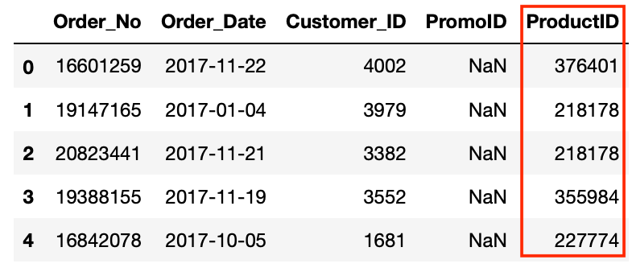

.png)
Pandas provides us with functions for joining different data frames together to create one combined data frame. To achieve this, we can use many of the join functionality used in database languages like SQL.
If you have a background in SQL or any other language that makes use of joins then you can carry on with this part of the series. If you’re not familiar with different join behaviour then we recommend going through our introduction to joins and join types, which you can find here
Pandas merge function works in a similar way to classic SQL joins but with data frames instead of tables. We specify the two data frames we want to merge, the relational fields and then define the join behaviour as you can see in the example below.
We can use the on parameter to pass in the columns we want to join on as you can see above but this only works if the columns are named the same in both data frames. If not, then we can use the left_on and right_on parameters to tell Pandas which columns from the left should be matched with which columns in the right data frame.
We can also join on more than one column by passing a list of columns through the on parameters. The position of the column name in the list is used to find the corresponding column in the other list. For example the column listed first in the left_on list is used to match the column listed first in the right_on list.
For our project we have loaded our data into data frames and selected the columns we need so it’s time to blend the separate data sources into one combined dataset so that we can do additional processing and then use the data for analysis or modelling.
Let’s start by joining the orders and products data frames. Each order has one or more products and the product ID is listed in the orders data frame but without any further information. All we have is a meaningless identfier.
Let’s use Merge to combine the orders and product data frames using the Product_ID columns into a new data frame.
We now have infomration about the costs associateed with the procucts in the orders as well as more detail about what type of products they actually are.
Now we can join our other data frames to our new data frame. To understand which products have been returned we can join our returns data frame to our main df data frame. There are actually two relational columns between these data frames: order_no and product_id. This is because customers can order multiple products but only return some of them. Also, as not every product will be returned, some of our orders will not be contained in the returns data frame therefore using the default inner join behaviour will result in us excluding non-returned orders from our combined data frame. In this case we will need to use a left outer join which can be declared by passing the parameter how=‘left’.
The concat function works much like a Union in SQL. We can pass a list of data frames to the concat function and as default Pandas will match any column names and glue the column from the 2nd data frame to the bottom of the corresponding column in the first data frame. Any non matching columns will still be included but will show NAs in the records that belong to the data frame that is missing this column.
By default, any non-matching columns will still be included in the resulting data frame but will show NAs in the records that belong to the data frame that is missing this column, as is the case above. If we want to exclude non-matching columns we can pass the parameter join=‘inner’.
We can also use the concat function to perform the same operation but matching row names instead of columns by passing the axis=1 parameter.
We will also need to use the promotions data frame as part of our main data set. This data frame includes the discount rate for any products bought in a promo. We will need this to calculate what the customer actually paid.
In addition the customer data frame gives us information about who is buying the products from the business and joining this to our other data will allow us to understand the behaviour of different types of customers.
For practice let’s add these data frames to our main data frame: